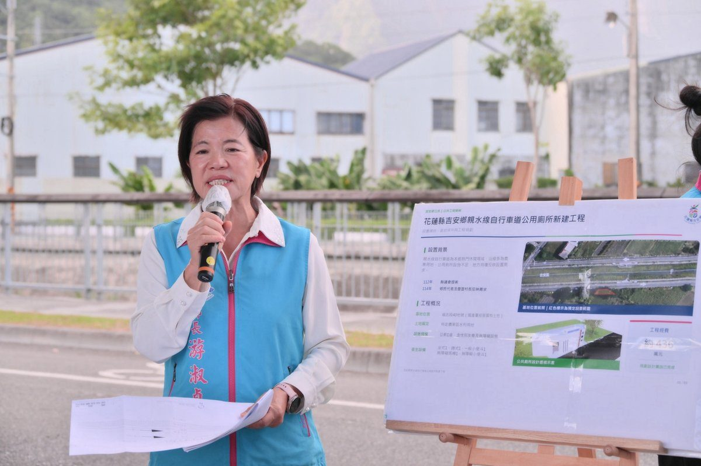

吉安七腳川公廁興辦在即 游淑貞偕代表會勘

可樂電子報小編/編輯
吉安鄉親水線自行車步道是鄉親運動、健走與騎車的日常路線，沿線卻長期沒有公共廁所。鄉長游淑貞21日下午率領公所團隊，偕同鄉民代表會主席邱美雲、副主席黃金發及多位代表，以及縣議員鄭乾龍，前往七腳川旁預定基地現地會勘，聽取「七腳川旁公廁興辦計畫」簡報，並就水利用地廢除等程序交換意見，希望加快行政作業，讓公廁早日到位。

游淑貞表示，親水線步道平日、假日都有不少人騎車、健走，卻找不到地方上廁所，增設公廁是地方反映多年的需求。這項訴求從112年縣議會提案，到114年鄉民代表與慶豐村長再次反映，公所持續與縣議員、代表會及地方各界溝通，尋覓合適基地、研擬建設方案，希望把公共設施補齊，讓鄉親運動休閒更安心。

不過，預定基地涉及國有土地與水利用地法規，程序相對繁複，推動時程也因此延後。基地目前土地使用分區為特定農業區水利用地，位於福吉段40地號、由國產署經管的國有土地。公所經多次會勘與協調，已取得公有土地變更使用同意，以及周邊兩筆私人土地所有權人同意；後續將與主管機關確認法定程序，完成公告、意見徵詢並取得核復後，再申請工程計畫、籌措建設經費。

文化及觀光發展所簡報指出，公廁規劃兼顧性別友善與無障礙需求，設置坐式、蹲式馬桶及一般小便斗各1座，另有無障礙馬桶與無障礙小便斗各1座，並依步道動線與當地季風條件配置設施，讓不同年齡層與身心障礙者都能安心使用。工程經費初估約436萬元，將依實際設計、物價與經費來源調整，公所也會積極爭取補助；待行政程序與經費到位後辦理發包，預估工期約6個月，目標明年6、7月啟用。

鄉民代表會主席邱美雲、副主席黃金發及代表林宗達、姜景文、高德安、劉靜文、林志忠、余震華、楊靖妍、詹益萬表示，代表會與公所多年來朝同一目標努力，感謝游鄉長與公所同仁積極推動，也感謝議員、村鄰長共同協調、反映民意，期盼計畫順利落實，讓鄉親運動休閒之餘，也能享有安全、便利的優質公共廁所。縣議員鄭乾龍指出，增設公廁是地方長期關注的需求，對經常健走及騎乘自行車的民眾而言，公廁不只是便利設施，更關係環境品質與使用安全。
游淑貞強調，公共建設有賴地方與各級民意代表攜手合作，公所將持續整合各方意見，依法辦理土地及工程相關程序，積極爭取所需資源，並盼在新任鄉長接續推動下，讓親水線自行車道公廁計畫順利落實；未來也將持續深化縣鄉合作，打造更友善、安全、舒適的休閒環境，回應鄉親期待。


▶ 延伸觀看
📺 相關報導影片：點此於 YouTube 觀看完整報導